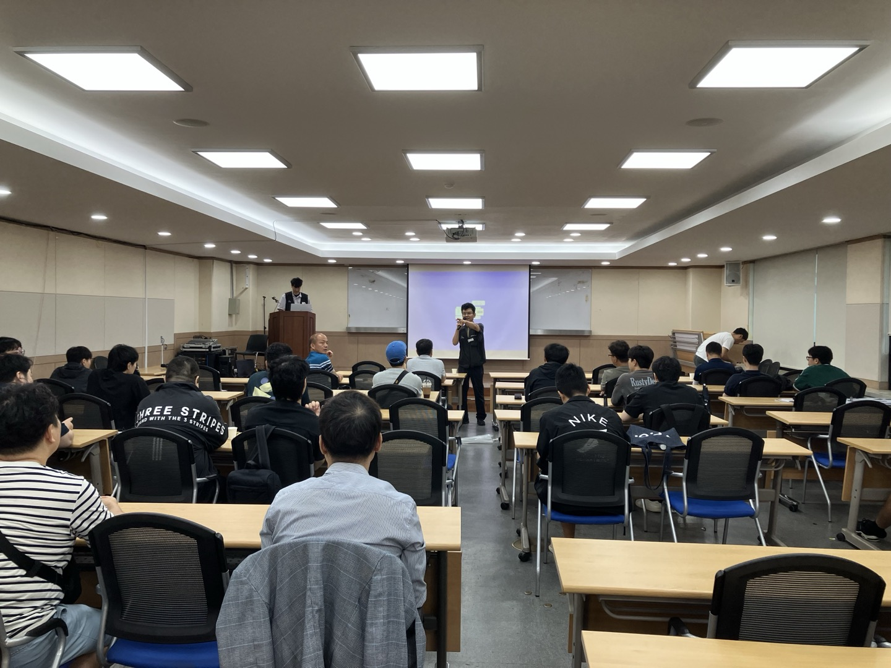

10월 총력투쟁, 무엇을 위해 싸우는가: 9.17 임시대의원대회 핵심 결과 보고
지난 9월 17일, 우리의 하반기 투쟁 방향을 결정하는 중요한 임시대의원대회가 열렸습니다. 이 자리에서 논의된 핵심 쟁점과 향후 계획을 모든 조합원과 공유하고자 합니다. 우리의 투쟁은 정당하며, 요구는 명확합니다. 10월은 지난 투쟁의 결실을 맺을 골든타임입니다.
1. 하반기 투쟁 로드맵: 10월 총력투쟁으로 결실을 맺읍시다!
우리의 미래를 결정할 중요한 일정들이 10월에 집중되어 있습니다. 한 치의 흔들림 없이 단결된 힘을 모아야 할 때입니다.
- 9월 말 (고속철도 통합 2차 간담회): 국토부의 입장을 최종 확인합니다. 시간 끌기로 판단될 경우, 즉시 총력투쟁으로 전환합니다.
- 10월 16일 (임시대의원대회): 전 조합원의 총의를 모아 투쟁 결의를 다지는 중요한 자리입니다.
- 10월 말 (성과급 연구 결과 발표): 결과 발표 이전, 공사와의 임금 집중교섭을 통해 우리의 요구를 관철할 것입니다.
- 10월 28일 ~ 31일 (쟁의행위 찬반투표): 11월 총력투쟁을 위한 가장 강력한 무기를 확보하는 시간입니다. 압도적인 찬성으로 우리의 의지를 보여줍시다.

2. 3대 핵심 쟁점: 우리의 요구는 명확합니다.
이번 투쟁은 다음 3가지 핵심 요구를 관철하기 위함입니다.
- 하나, '무늬만 통합'이 아닌 '진짜 고속철도 통합'을 쟁취해야 합니다.
국토부에서 주장하는 단순 교차운행은 KTX-SRT 분리 체제를 유지하려는 꼼수에 불과합니다. 우리는 법인 통합을 통해 중복 비용을 없애고, 이를 통해 좌석수를 늘리고 운임을 낮춰 철도 공공성을 강화해야 합니다. 이는 곧 우리의 임금 및 근로조건 개선으로 이어질 것입니다. 교차운행을 상정 및 검토했던 지난 1차 관계자 회의에는 불참했으나, 2차 관계자 회의에 참석하여 우리의 입장을 명확히 전달하고 정부의 의지를 확인할 것입니다. - 둘, 더 이상 동료를 잃을 수 없습니다. '안전한 현장'과 '인력 충원'이 시급합니다.
구로역, 청도역의 비극은 인력 부족이 부른 참사였습니다. 투쟁의 결과로 인접선 차단 작업 의무화, 상례작업 폐지 등 일부 진전이 있었지만, 근본적인 해결책은 인력 충원입니다. 임금 집중교섭을 통해 실질적인 안전 인력 충원을 반드시 관철하고, 정년연장 문제와도 연계하여 대응할 것입니다. - 셋, 빼앗긴 임금을 되찾는 '성과급 정상화'를 이뤄내야 합니다.
지난 8월 성과급 포럼을 통해 우리의 요구가 정당함을 확인했습니다. 그러나 기재부 담당자는 여전히 공운위와 감사원 지적을 핑계로 부담을 느끼고 있습니다. 10월 말 최종 결과 발표 이전에 집중교섭을 통해 성과급 정상화를 쟁취할 것입니다.

3. 현장의 목소리, 놓치지 않겠습니다 (주요 교섭 현황 Q&A)
복잡한 교섭 안건들을 Q&A 형식으로 알기 쉽게 정리했습니다. 3분기 노사협의회에서는 급한 현안만 논의했으며, 주요 안건은 4분기로 이월되었습니다.
Q. 장기근속휴가는 어떻게 되나요?
공사 측에서 약 200억 원의 인건비가 늘어난다며 난색을 표하고 있어, 조합 차원의 깊은 고민과 전략이 필요한 상황입니다.
Q. 10월 1일부터 바뀌는 근태관리 시스템은 무엇인가요?
감사원 지적사항을 핑계로, 문제가 생겼을 때 개인에게 책임을 떠넘기려는 시스템입니다. 본인이 사후에 다시 보고해야 최종 결재가 되는 방식입니다. 10월 1일 시범운영 후 조합원들의 의견을 모아 대응할 예정입니다.
Q. 통상임금 소송 결과는 언제쯤 지급되나요?
10월 지급을 목표로 하고 있습니다. 다만, 교번 근무자와 일근 근무자 간 통상임금 차이가 극단적인 경우 150만 원까지 발생하는 문제가 있어 추가 협의가 필요합니다.
Q. 승진 적체 문제는 어떻게 해결되나요?
승진 적체 구간에 승진 포인트제가 도입되었으나, 오히려 역전 현상이 발생하거나 특정 부서에 점수가 편중되는 등 일부 문제가 발견되어 추가 협의를 진행할 예정입니다.
Q. 비번일 연차 사용(교대 분할 연차)이나 병가 서류 간소화는 어떻게 되나요?
두 사안 모두 현재 협의를 진행할 예정입니다.
Q. 명절 상여금 지급 기준(2019년)을 바꿀 수 있나요?
2019년 당시 정액화하면서 남는 재원을 기본급 인상에 사용하기로 노사가 합의한 사항입니다. 현재 진행 중인 임금 관련 현안들이 정리된 이후에 다시 논의할 수 있을 것입니다.
Q. 임금피크제는 어떻게 되나요?
현재 진행 중인 교섭 이후에 검토할 예정입니다.